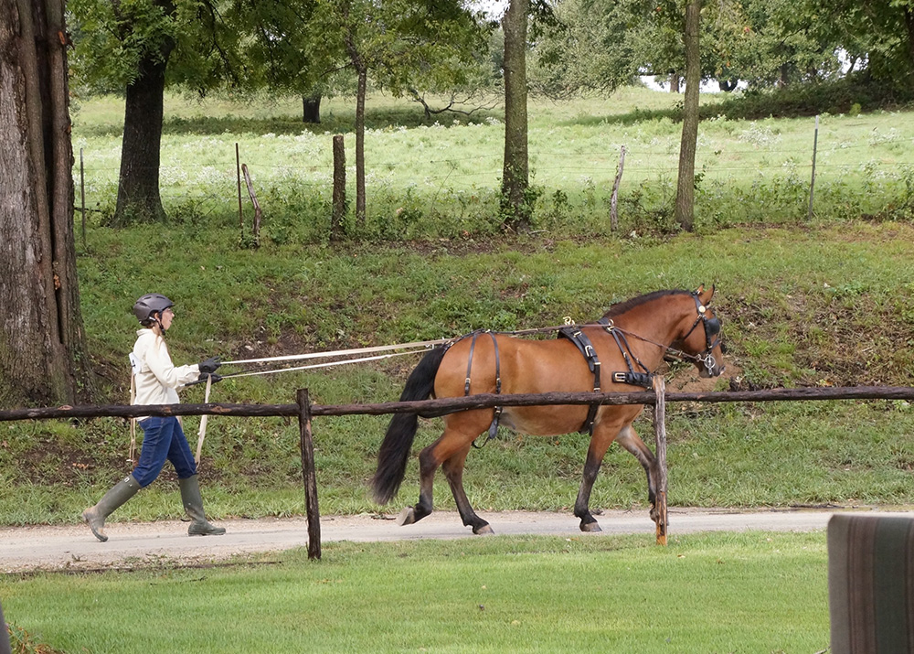

12/11/2016 Topper's
Driving Adventure
Probably more my driving adventure, but Topper was a big part
of it. Once fox hunting season ended I was riding Topper, but
had thrown the harness on him and ground driven him around.
He was very relaxed and obedient and it was a contrast to when I
rode him in the exact same area on the same day.
I figured he had been driven, being Amish, but the sellers had not
driven him themselves so I went back to the beginning.
Thinking he had driven, I occasionally rushed things, but Topper
was sure to make it clear when I was skipping a step.
Meg was instrumental, of course, but Emily and Donna
both stopped by to lend a hand when needed.
Donna came out in the summer and ground drove him. It was hugely helpful to see that he could take more contact and to show me how to deal with reins. Happily she deemed him suitable and encouraged me to continue.
I did put the cart before the horse, or pony as it may be. I knew what I wanted, and when this came up for sale along with a suitable harness, I bought myself a birthday present. It should fill my needs unless I decide I need four wheels.
Working up to a controllable trot.
All the driving was great for building up his topline correctly.
I complained a lot that I was working as hard as he was.
We did a lot of evening drives during the summer trying to find time when the sun wasn't high in the sky.
A lot of halting and standing around. He can be an impatient pony so we always go back to working on this.
Working with poles that mimic shafts. Introducing one and then two dragging needed side walkers. On my own I could work on it, but it was the one step that I had to
go over many times before he settled to the concept.
We did a lot of turning exercises so I could stand in the middle and not have to move so much.
With the pole and the tire, first it was me dragging with him going in front. Luckily he's very responsive and I could switch to one handed when I needed to.
Me concentrating. I did drop the whip, but it was still a lot to think about to keep everything in place and keep him going calmly.
I'd reward him my trotting up and down the driveway doing figures around the trees. I'd be tired, but he seemed to enjoy it.
Our first driving show we hit without a cart. The let us ground drive through the obstacles. He was very excited seeing all the ponies, minis, horses, cart and carriages, but he was controllable. In the ring by himself he was great and listened better than I expected.
Driving him around the grounds to let him see everything.

He was obedient, but sometimes worried about the other equines. I had a lot to focus on to keep him focused on me.
Back at home and now he was pulling a travois and not concerned with the shafts or noise at all.
The first time we introduced the cart Meg was pulling it, holding it in the tugs, but we didn't have it attached, just in case.

First time hooking and checking all the parts. It took a few times to get things fitted and looking right and level.
He was good his first time out, but did have a tantrum or two and did a lot of head tossing. Every new thing he needs to test his boundaries. Such a pony.
He was more eager than anxious, which is what we wanted. He seemed to think he was supposed to trot off after hooking, which is probably how it was in his previous life.
He knew when to really pull and when to balance to hold the cart back.
He was always faster heading back to the barn, but we'd turn him away and then back until he'd settle.
Some more harness fitting. He has pony and cob harness parts due to his size.
Every time he's been more confident.
Somewhere in his background he was taught to park out. I think it's funny. Meg has us work to not do it, since it won't be appropriate in the dressage ring.
Back down the hill to the carriage house. Having to navigate that twisting hill has been good for both of us.
Of lead. Just checking that we still had whoa.
The harness lives in the house, so I've taken to tacking up on the porch. He's perfect about standing there.

Walking calmly past the scary garbage can and wheel barrows. This is a very different horse than the one that hates going near those under saddle. I think it's all about
finding what the horse is comfortable doing for his job. I'm sure he won't love driven dressage, but that's different than the tension he tends to have under saddle. I take my horses to a variety of places, and without the consistency of working in the same ring every day, he made it clear that taking him out in harness would make him a much happier pony.

We've come a long way in the past year. There's a lot more to work on once we start trailering out, but he seems very comfortable in this role.
I've had Amish horses who were very subservient. Topper did not lose any of his attitude, although he is suspicious of people. I think going through this training where I was new to it and he mostly knew what was going on, we've bonded more and he appears to trust me in the driver's seat of the cart.